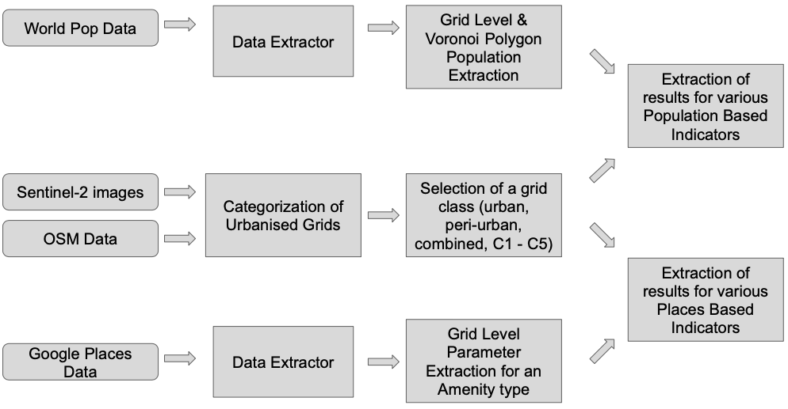

OSM based Indicators
Each district’s bounding box is divided into grids of 0.01 latitudinal and 0.01 longitudinal widths. Each grid has area roughly 1 Km square, which is one-third of the average size of a village in India. Sentinel-2 images of a district is passed through
a pipeline containing land-use classifier to finally produce 30m resolution pixels classified as urban, peri-urban and rural. A grid is selected for further analysis of its road network only if more than 50% of its pixels are either
urban or peri-urban because amount of built-up pixels in a districts’s satellite image is an indicator of human development activities (like the construction of residential buildings, commercial structures, roads, etc.) in the district.
The road network data (downloaded from OSM) is used to calculate indicators like number of 3 ways, number of 4 ways, road length, walkability ratio etc for each urbanised grid.
WorldPop based Indicators
WorldPop includes the rasterized data of the population of different countries. Among various formats of the dataset available at Worldpop, we used their “top-down constrained” model. The top-down approach takes a global database of the administrative
unit- based census to project counts for year 2020. Further, in the top-down constrained model, the population is disaggregated to only those grid cells identified as containing buildings/built settlements. The dataset used contains
population count for 100m x 100m pixel granularity. We converted the rasterised WorldPop data into a 2D numpy array representing population in each pixel. One grid contained many of the world pop pixels. Various Population Based Indicators
extracted from this data are:- a) Grid Population:: For each urbanised grid, we found out the array slicing offsets and then took a sum of the population in that sliced array to find the population of that grid. b) Population load
on amenity sites:: Taking every amenity site (of a particular category) within district boundary we generated their Voroni diagram. The polygon formed for each site was called its catchment area. Then for each amenity site with a bounded
catchment area that lied within the bounding box of district, we found out the population in that catchment area and called that as population load on that amenity site assuming that the amenity site serves all people within its catchment
area.
Google Places based Indicators
Using the Google Places API, one can search for place information using various categories, including establishments, prominent points of interest, and geographic locations. We used their “Place Search” API that returns a list of places and summary information
about each site, including their geographical coordinates. We use these coordinates, after some pre-processing, in our further analysis. We generate HTTP Request on places API which takes type of category, centre and radius as input
and returns the data of that type of amenities present in the circular region including their latitude and longitude in form of json file.
| Categories | Places amenities in each Category |
|---|---|
| Education | School, Primary School |
| Health | Hospital, Doctor |
| Connectivity | Taxi Stand, Bus Station, Train Station |
| Utilities | Grocery store or supermarket, department store |
| Govt. Facilities | Bank, Police, Local Govt. Office |
| Categories | Standard Range in metres |
|---|---|
| Education | 2000 |
| Health | 2000 |
| Connectivity | 400-800 |
| Utilities | 800 |
| Govt. Facilities | 2000 |
Overall Picture


To know more, refer to our research paper here :
Characterizing The Evolution Of Indian Cities Using Satellite Imagery And Open Street Maps
C. Bansal, A. Singla, A. K. Singh, H. O. Ahlawat, M. Jain, P. Singh, P. Kumar, R. Saha, S. Taparia, S. Yadav, A. Seth
ACM COMPASS 2020
Characterizing The Evolution Of Indian Cities Using Satellite Imagery And Open Street Maps
C. Bansal, A. Singla, A. K. Singh, H. O. Ahlawat, M. Jain, P. Singh, P. Kumar, R. Saha, S. Taparia, S. Yadav, A. Seth
ACM COMPASS 2020